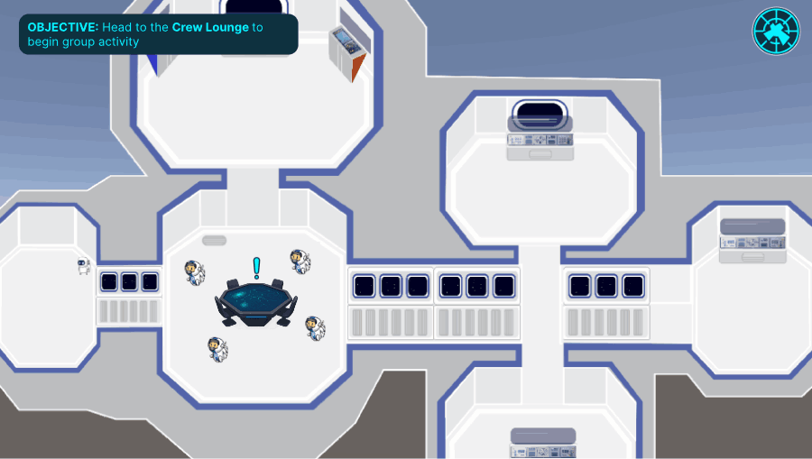
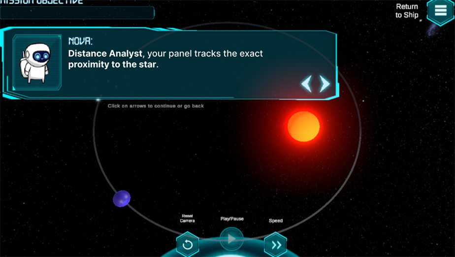
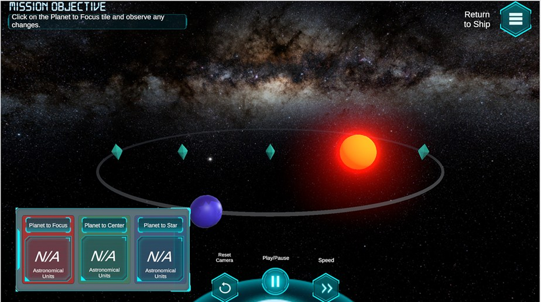
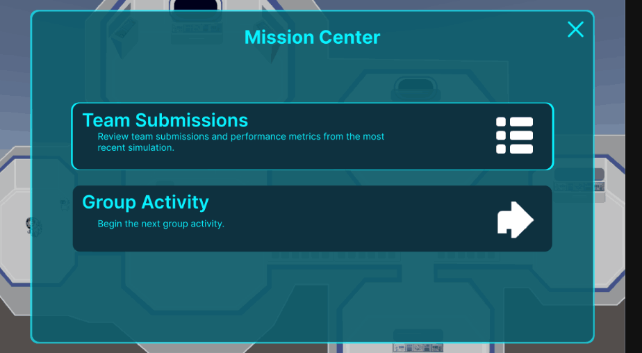
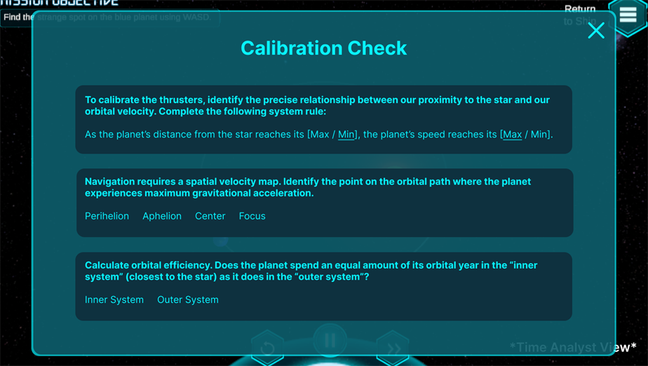
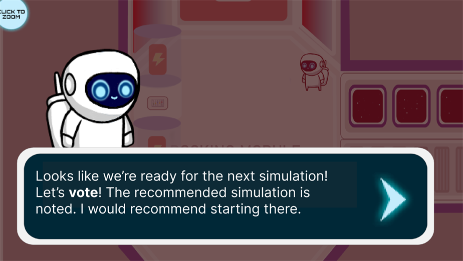

Overview
HoloOrbits is a browser-based multiplayer sim where secondary school students work together in real time to solve orbital mechanics challenges. As UX Lead on a 4-person team, I led the redesign of the navigation, the collaborative mechanics, and the in-game feedback, basically turning it from a passive simulation into something students actually had to problem-solve through together.
Inside HoloOrbits
Redesigned for collaboration

Legible navigation
A clear objective and destination before anyone has to decide anything.

Orbital simulation
The physics students actually have to reason through together.

Differentiated roles
Each analyst sees one incomplete reading, so the crew has to talk.

One clear next step
A single hub for reviewing team results and starting the next activity — no hunting through menus.

Role-specific challenges
The Time Analyst answers questions the Distance Analyst never sees, so nobody can solve it alone.

Group consensus
Nova surfaces a recommendation, but the crew votes together before moving on.
The challenge
The original HoloOrbits was developed as a single-player experience meant to be played by students individually, with collaboration only happening outside of the experience. When students loaded it up, they moved through a series of orbital mechanics scenarios, and clicked through prompts. This worked, but students weren't really engaging with the physics in the way that the lab wanted them to, they were just clicking through without really thinking about it much.
Two things were broken. First, it was passive: prompts just told students what was happening instead of making them figure it out. Second, it was solo: no reason to talk to anyone, no shared objective, nothing to actually disagree about. Students were prompted to discuss the activities off the app, but there was no real collaboration embedded in the experience.
So the redesign question became: what does real collaboration actually look like in a physics simulation? We wanted to move away from the two people staring at the same screen aspect by creating shared decisions that actually matter to the outcome.
"There's a difference between two students watching the same simulation and two students disagreeing about what to do next. We wanted the second one."
My approach
I led UX from Figma all the way to the pilot, working closely with one teammate on the final build. My focus was three interlocking problems: navigation, the multiplayer mechanic, and in-game feedback.
Navigation was the first fix. The original flow was linear and kind of opaque, students didn't know where they were in the experience or what success even looked like, so I redesigned it to make progress legible and the objective clear before anyone made a decision. I added a mini map to help students navigate the ship, and a clear objective banner to point the crew to the next group activity.
For the multiplayer mechanic, I gave students differentiated roles within each scenario. Instead of two people controlling the same thing, I went for distinct responsibilities that actually require coordinating to finish the objective. That's what forces the communication.
And for feedback, passive prompts got replaced with a structured accuracy system tied to the actual physics of what a student just did. For example, how close was the trajectory to the target orbit, and why that mattered.
Key outcomes
- 01
Redesigned the whole experience for real classroom use, shifting it from single-player to multiplayer, where students work toward shared objectives with roles that depend on each other.
- 02
Replaced passive prompts with a structured accuracy feedback system, so students get a real response to their physics decisions instead of just being told a story about what's happening.
- 03
Ran a structured pilot with college students that validated the collaborative mechanics and drove a final round of refinements before handoff.
The pilot
We ran a structured pilot with college students. Admittedly, this isn't HoloOrbits' actual target audience, but it's close enough to validate the core mechanics and surface friction in the new collaboration model.
We built the session around a few specific questions. Would students get the differentiated roles without being told? Would the accuracy feedback actually change their approach, or would they just ignore it? Were there spots in the flow where both players got stuck?
The results were mostly good, and useful in several ways. Students picked up their roles faster than expected once they saw the objective screen. The accuracy feedback actually got students talking, turning to each other to figure out what the numbers meant, which is exactly the behavior we were designing for. The main friction point was the transition between scenarios, and we fixed that in the final round of changes.
- 5
participants (college students proxying for target secondary-school audience)
- 4.8–5/5
average rating across collaboration, teamwork, and navigation clarity
"Because the data is incomplete, and an individual can only find one piece of the data set, everyone has to work together to complete the mission — meaning everyone's contribution is essential."
Pilot participant"This is a really thoughtful design that stimulates collaboration early so that it comes naturally in later activities. I really liked how the game balances individual and collaborative tasks."
Pilot participant"I like that they left the bones of the simulation the same while adding content to make it more collaborative."
Pilot participantReflection
The moment that made the whole semester worth it was watching two students argue about which trajectory correction to use. They were wrong about the physics, but they were genuinely arguing about it, treating it like a real problem with a real answer. That was basically the whole design goal, so seeing it play out in the pilot was a really rewarding experience.
Working on an educational game changed how I think about engagement. In a consumer app, engagement means return visits and session length. In a classroom sim, it means whether a student is actually thinking. Designing for real cognitive engagement, not just a satisfying UI, was a genuinely different kind of problem, and I found it really compelling and something I carried over into my work on Ordo.
Tech stack